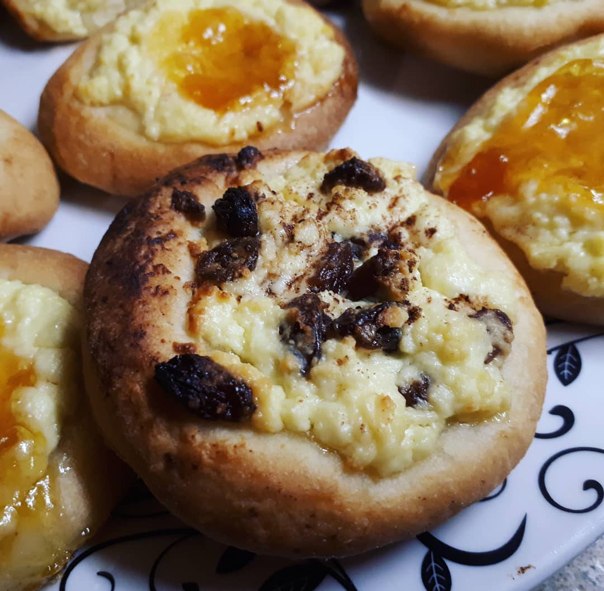

Kváskové hanácke tvarohové koláče s hrozienkami, s ďzemom a posypané škoricou
#kvaskovani #kvaskovanie#pecenie#sourdough #sourdoughpastry #sourdoughbaking #baking#sourdoughclub#peceni #sweetbaking#kvaskujeme#pecieme#sourdoughmania #sourdoughsweets#sourdoughstarter#lievitomadre#levian#caputoflour #kolace #koláče #hanackekolace